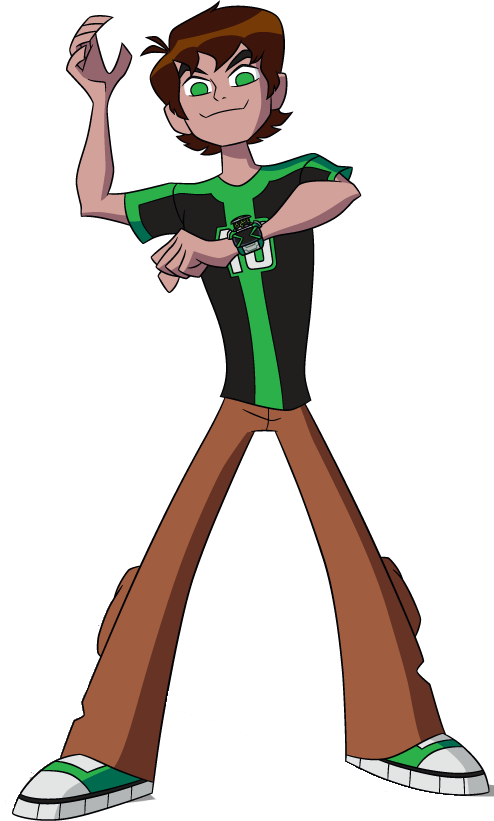

Ben Tennyson usa um relógio alienígena, o Omnitrix, para se transformar em vários aliens com poderes diferentes e lutar contra vilões.

Se quiser conversar com um herói de verdade, clique no botão abaixo